# day01-HTML 标签
# 一、学习目标
# 二、认识前端
# 阶段一课程内容分布
html
# 三、认识网页
# 网页组成
网页是由: 文字,图片,输入框,按钮,视频,音频....元素组成的 | |
总结: | |
网页就是由HTML组成的 |
# 网页规范 (万维网联盟 W3C)
web 网页要遵循的标准，也可以说是我们写前端代码的一个基本语法准则
☞ 结构标准: 制作网页必须按照HTMl的标准结构去写网页 | |
☞ 表现标准: 用来美化网页CSS | |
☞ 行为标准: 用来实现网页中的用户的一些动作处理 JavaScript |
# 四、浏览器介绍
# 主流浏览器
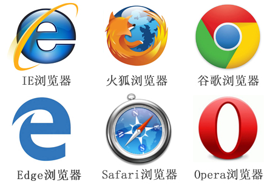
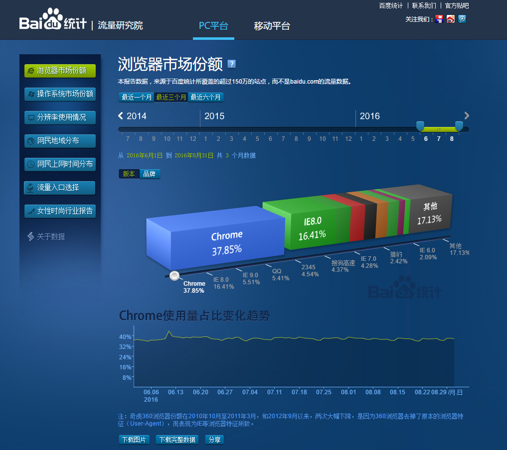
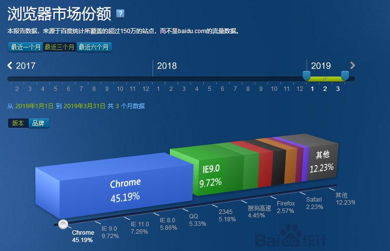
查看网站：http://tongji.baidu.com/data/browser
# 内核（渲染引擎）
Trident(IE内核)： | |
IE、傲游、世界之窗浏览器、Avant、腾讯TT、猎豹安全浏览器、360极速浏览器、百度浏览器等 | |
Gecko(firefox)： | |
Gecko(Firefox 内核)： Mozilla FireFox(火狐浏览器) 采用该内核，Gecko 的特点是代码完全公开，因此，其可开发程度很高 | |
webkit(Safari): | |
Safari 是苹果公司开发的浏览器，所用浏览器内核的名称是大名鼎鼎的 WebKit。傲游浏览器3、 Apple Safari (Win/Mac/iPhone/iPad)、Symbian手机浏览器、Android 默认浏览器。 | |
Blink： | |
大部分国产浏览器最新版都采用Blink内核。二次开发。谷歌浏览器。Blink 其实是 WebKit 的分支。 | |
Presto(Opera) ： | |
Presto（已经废弃） 是挪威产浏览器 opera 的 "前任" 内核，为何说是 "前任"，因为最新的 opera 浏览器早已将之抛弃从而投入到了谷歌怀抱了。 |
# 五、为什么要遵循 WEB 标准呢？
通过以上浏览器的内核不同，我们知道他们渲染或者排版的模式就有些许差异，显示就会有差别。导致用户在不同的浏览器看到同一个页面是不同的效果。
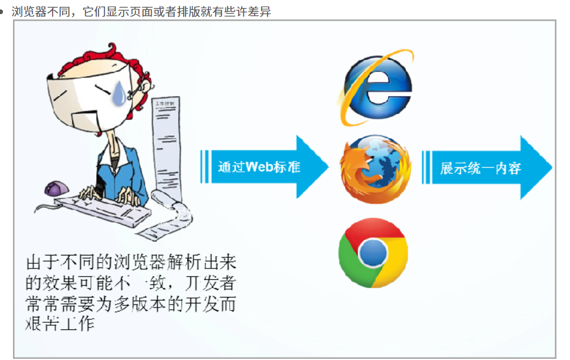
# 六、Web 标准构成
构成： 主要包括结构（Structure）HTML、表现（Presentation）CSS 和行为（Behavior）js 三个方面。
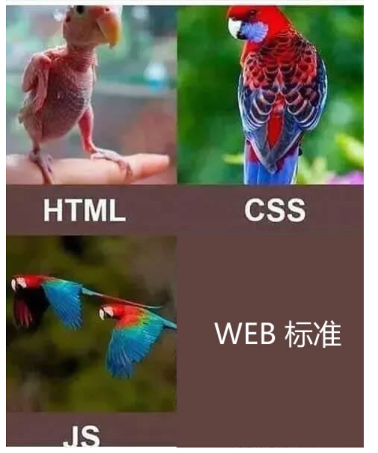
结构标准：结构用于对网页元素进行整理和分类，咱们主要学的是 HTML。 对于网页来说最重要的一部分
表现标准：表现用于设置网页元素的版式、颜色、大小等外观样式，主要指的是 CSS
行为标准：行为是指网页模型的定义及交互的编写，咱们主要学的是 Javascript js
重要的原则：页面三层分离 (HTML,css，js 书写的时候分开来写)
理想状态我们的源码： .HTML .css .js
# 七、HTML (重点)
# 7.1 概念
☞ HTML： Hyper Text Markup Language.[ 超文本标记语言 ] | |
超文本: 本质就是一个文本[在网页中,用来实现页面跳转的文本 ---超链接标签] | |
标记: 记号. [各种HTML标签] 标签 | |
HTML的学习其实就是学些大量的标签 | |
标签学习： | |
1.标签长什么样子 | |
2.作用 |
# 7.1.1 标签的语法
标签： <标签名></标签名> | |
标签语法2： <标签名> 或者 <标签名/> |
# 7.2 结构
注意: | |
1. 我们在以后写代码(html,css,js...)遇到特殊符号,必须都是英文输入下的符号. | |
2. 制作一个网页必须按照html的结构去写. | |
<!doctype html> | |
<html> | |
<head> | |
<title></title> | |
</head> | |
<body> | |
</body> | |
</html> |
# 7.3 编辑器
常见的前端使用的编辑器
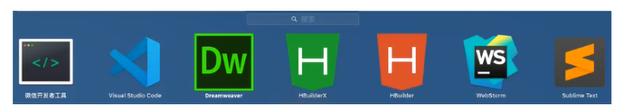
其实真正的高手和手上的工具是没有关系的。如：
# 7.3.1 编辑器的几个插件
Chinese (Simplified) Language Pack for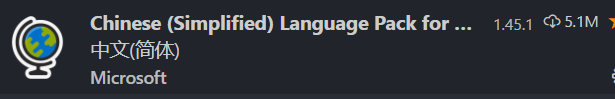
Auto Rename Tag（自动重命名标签）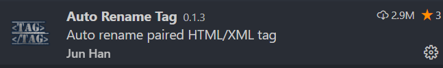
AutoFileName（自动补全文件名）
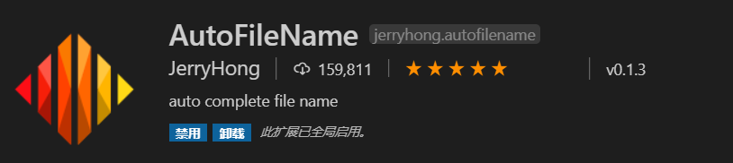
open in browser（浏览器打开） 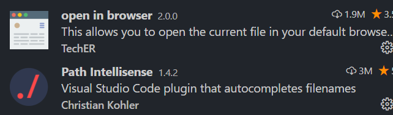
vscode-icons
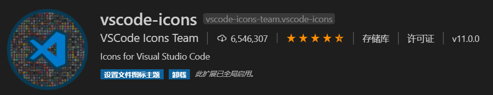
# 7.3.2 编辑器的使用
- 使用 vscode 打开练习文件夹的方式
在菜单栏中，文件 --》打开文件夹
打开 vscode 编辑器后，用鼠标按住想要打开的文件夹，直接拖拽到 vscode 窗口
鼠标选中想要打开的文件夹，点击鼠标右键，选中通 code 打开
快速生成 HTML 基本结构
新建一个 html 后缀的文件
!+tab (按下键盘的 tab 键) 确认输入的是英文状态下的！
快速补充完整标签：
- 标签名 + tab
# 7.4 一些文件夹习惯的说明
建议： | |
大家在学习的过程中，也养成整理文件的习惯，每日都有一个对应的练习练习文件夹，不要把所有的东西都丢在桌面上 |
# 7.4.2 文件后缀名
win7 系统 文件后缀名显示
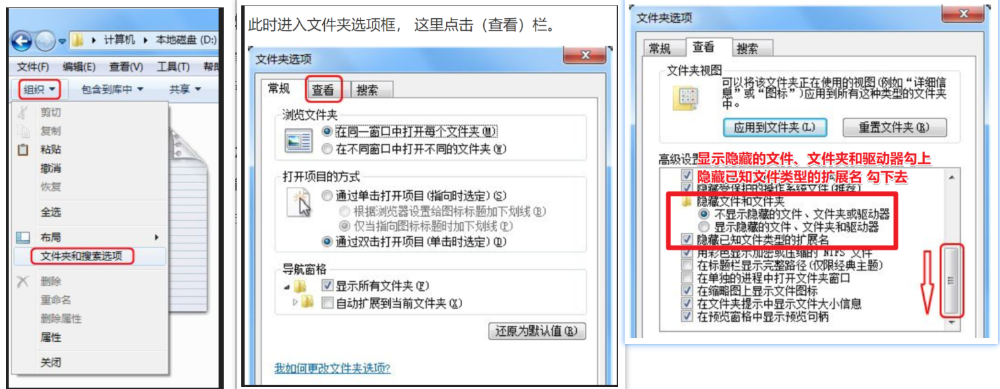
win10 系统 文件后缀名显示
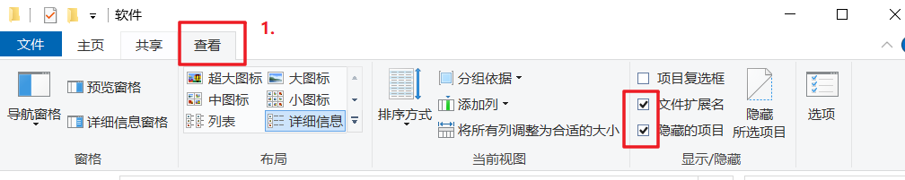
# 7.5 文档类型与字符集
<!DOCTYPE html> |
# 7.6 <!DOCTYPE html> 的作用
这句话就是告诉我们使用哪个 html 版本？ 我们使用的是 html 5 的版本。 html 有很多版本，那我们应该告诉用户和浏览器我们使用的版本号。
<!DOCTYPE> 标签位于文档的最前面 | |
用于向浏览器说明当前文档使用哪种 HTML 或 XHTML 标准规范，必需在开头处使用<!DOCTYPE>标签为所有的XHTML文档指定XHTML版本和类型，只有这样浏览器才能按指定的文档类型进行解析。 | |
注意： 一些老网站可能用的还是老版本的文档类型比如 XHTML之类的，但是我们学的是HTML5,而且HTML5的文档类型兼容很好(向下兼容的原则)，所以大家放心的使用HTML5的文档类型就好了。 |
html5 以前的文档类型：
1.XHTML1.1 | |
语法：<!DOCTYPE html PUBLIC "-//W3C//DTD XHTML 1.1//EN" "http://www.w3.org/TR/xhtml11/DTD/xhtml11.dtd"> | |
2.XHTML 1.0 Frameset | |
语法：<!DOCTYPE html PUBLIC "-//W3C//DTD XHTML 1.0 Frameset//EN" "http://www.w3.org/TR/xhtml1/DTD/xhtml1-frameset.dtd"> | |
3.XHTML 1.0 Transitional | |
语法：<!DOCTYPE html PUBLIC "-//W3C//DTD XHTML 1.0 Transitional//EN" "http://www.w3.org/TR/xhtml1/DTD/xhtml1-transitional.dtd"> | |
4.XHTML 1.0 Strict | |
语法：<!DOCTYPE html PUBLIC "-//W3C//DTD XHTML 1.0 Strict//EN" "http://www.w3.org/TR/xhtml1/DTD/xhtml1-strict.dtd"> | |
5.HTML 4.01 Frameset | |
语法：<!DOCTYPE HTML PUBLIC "-//W3C//DTD HTML 4.01 Transitional//EN" "http://www.w3.org/TR/html4/loose.dtd"> | |
6.HTML 4.01 Strict | |
语法：<!DOCTYPE HTML PUBLIC "-//W3C//DTD HTML 4.01//EN" "http://www.w3.org/TR/html4/strict.dtd"> | |
7.HTML 5 | |
语法：<!DOCTYPE html> |
# DOCTYPE 的作用
声明文档的解析类型 (document.compatMode)，避免浏览器的怪异模式。
# document.compatMode：
BackCompat：怪异模式，浏览器使用自己的怪异模式解析渲染页面。
CSS1Compat：标准模式，浏览器使用 W3C 的标准解析渲染页面。
这个属性会被浏览器识别并使用，但是如果你的页面没有 DOCTYPE 的声明，那么 compatMode 默认就是 BackCompat。
# 7.7 字符集
<meta charset="UTF-8" /> |
utf-8 是目前最常用的字符集编码方式，常用的字符集编码方式还有 gbk 和 gb2312。
gb2312 简单中文 包括 6763 个汉字 --- 汉语
BIG5 繁体中文 港澳台等用
GBK 包含全部中文字符 是 GB2312 的扩展，加入对繁体字的支持，兼容 GB2312
UTF-8 则包含全世界所有国家需要用到的字符 --- 相当于英文
记住一点，以后我们统统使用UTF-8 字符集, 这样就避免出现字符集不统一而引起乱码的情况了。
# 7.8 结构详解
<!doctype html> -----> 用来告诉浏览器文档类型, 该标签最好不要去掉.如果将该标签去掉之后,浏览器会出现一只怪异模式[浏览器不确定到底按照哪种渲染方式去渲染显示网页] | |
<html></html> -----> 根标签 | |
<head></head> ----- 设置网页中基本的配置内容(网页的标题,网页中的样式,网页中的js代码效果....) | |
<title></title> ----> 设置网页标题 | |
<body></body> ---> 代表的是网页主体[在网页中除去地址栏看到的任何信息都要放到body标签中] |
# 7.9 标签之间的关系
☞ 嵌套关系: 一个标签包含其他标签 [父元素和子元素] | |
☞ 并列关系: 标签之间不存在嵌套包含 | |
例如: <head></head> 和 <body></body> |
嵌套关系：
并列关系：
# 7.10 标签写法分类
☞ 双标签: 有开始和结束的标签. | |
总结: | |
1. 如果页面中出现嵌套关系,父元素一定是双标签,子元素可以是双标签或者单标签 | |
☞ 单标签: 只有开始没有结束 | |
总结: | |
1. 单独标签一定不能作为父元素. |
# 单标签
☞ 换行标签: <br> | |
☞ 横线: <hr> | |
☞ 文档类型: <!doctype html> | |
☞ 注释标签: <!-- 内容 --> ctrl + / |
# 双标签
☞ 双标签： <head></head> <body></body> |
# 7.11 常用标签
# h - 标题标签
用来设置页面中的内容标题：<h1></h1> - <h6></h6> | |
特点： | |
1.数字越大，标题标签中的默认字体越小，重要性也越小，h1重要性最高 | |
2.一个页面一般只有一个h1标签，给logo使用 | |
3.独占一行 |
# p - 段落标签
用来表示文章段落或者一段文本： <p></p> | |
特点：独占一行 |
# br - 换行标签 (熟记)
单词缩写： break 打断 ,换行 | |
在HTML中，一个段落中的文字会从左到右依次排列，直到浏览器窗口的右端，然后自动换行。如果希望某段文本强制换行显示，就需要使用换行标签 | |
<br> |
这时如果还像在 word 中直接敲回车键换行就不起作用了。
# hr - 水平线标签 (认识)
单词缩写： horizontal 横线 | |
在网页中常常看到一些水平线将段落与段落之间隔开，使得文档结构清晰，层次分明。这些水平线可以通过插入图片实现，也可以简单地通过标签来完成，<hr>就是创建横跨网页水平线的标签。其基本语法格式如下： | |
<hr>是单标签 |
在网页中显示默认样式的水平线。
# 格式化（修饰）标签 [双标签]
☞ 设置文字颜色或者设置文字大小: <font></font> | |
1. 改变文字颜色需要添加color属性 <font color="red">我是红颜色的文字</font> | |
2. 改变文字大小需要添加size属性 <font color="orange" size="7">我是红颜色的文字</font> | |
☞ 设置文字是否加粗: <strong> </strong> 或者 <b> </b> | |
☞ 设置文字斜体显示: <em></em> 或者 <i> </i> | |
☞ 设置文字删除线效果: <del></del> 或者 <s></s> | |
☞ 设置文字下划线效果: <ins></ins> 或者 <u></u> |
# div span 标签 (重点)
div span 是没有语义的 是我们网页布局主要的 2 个盒子
div 就是 division 的缩写 分割， 分区的意思 其实有很多 div 来组合网页。
span, 跨度，跨距；范围
语法格式：
<div> 这是头部 </div> <span>今日价格</span> |
# img - 图片标签【多媒体标签 - 重点】
☞ 图片标签: <img> | |
☞ 属性: | |
src:设置要显示的图片路径 <img src="1.jpg">. | |
width: 设置标签宽度. | |
height: 设置标签高度. | |
title: 鼠标悬停到图片上的文字提示. | |
alt: 当图片无法正常显示时候的文字提示. |
# a - 超链接【重点】
本质: 就是用来实现页面跳转. | |
<a href="目标页面路径"></a> | |
属性: | |
target:设置目标页面打开方式(默认在当前页面中打开_self | _blank 新窗口中打开) | |
总结: | |
如果希望当前页面中所有超链接跳转页面的时候,都在新窗口中打开,那么只需要在head标签中设置 base标签,给base标签设置target属性即可. |
# 锚链接
本质: 在当前页面中跳转. 网页中的返回顶部效果 | |
<a href="#"></a> | |
"#": 返回当前页面开始位置 |
# 7.12 路径（重点）
☞ 绝对路径: | |
1. 如果路径中包含具体的磁盘目录: d:/img/1.jpg | |
2. 如果路径中具有具体的网址: www.baidu.com/img/1.jpg | |
☞ 相对路径: 必须在同一个根目录下. | |
1. 如果当前页面和被访问的资源在同一个文件夹中,路径=直接设置文件名称 | |
2. 如果当前页面在被访问资源的下一级目录中, 路径=文件所在的文件夹名称/文件名 | |
3. 如果当前页面在被访问资源的上一级目录中,路径=../文件名称 |
# 八、特殊字符（了解）